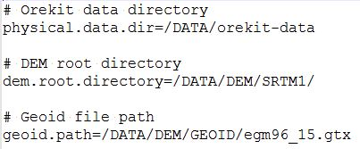
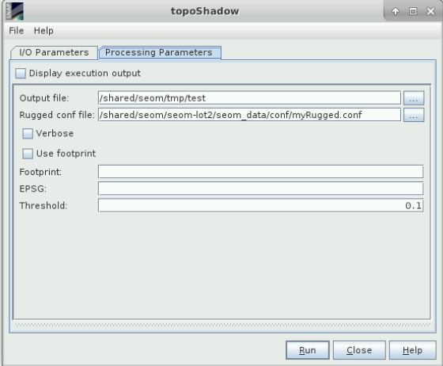

| Topographic Shadow Algorithm Specification | |
It is proposed a simple approach for detection and masking of topographic shadows. The principle of shadow identification is to map a ground area and estimate for each sample ground point whether it is directly under Sun light or if it is behind another topographic feature as seen from the Sun.
| Parameter | Description |
|---|---|
| outputFile | Full path of the output file. |
| ruggegConfFile |  |
| verbose | Verbose mode. |
| useFootprint | If this option is selected, the user defined footprint and EPSG are taken into account. |
| footprint | user defined footprint [ULX ULY LRX LRY] |
| EPSG | EPSG code of footprint |
| threshold | detection threshold in meters |
The parameters described above can be set through the graphical user interface designed in the SNAP Desktop component:
